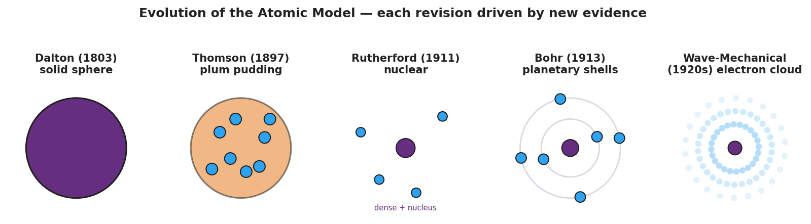

01 Phenomenon
A human hair is about 0.0001 m wide — already near the smallest thing your eye can see. A single atom is about 0.0000000001 m wide: roughly a million times smaller than the width of that hair. No microscope in 1900 — and no ordinary light microscope ever — can take a picture of a single atom, because an atom is even smaller than the wavelength of visible light. And yet, by 1911, scientists confidently described what is inside an atom: a tiny dense core of positive charge with electrons far outside it.
02 Driving question
How can scientists "see" something far too small to see?
03 Notice & wonder
| I notice… | I wonder… |
|---|---|
Turn & Talk #1: If you cannot see an atom directly, what could you do instead to figure out what is inside it? Think about how you would learn the shape of something hidden inside a closed box without opening it.
04 Initial model
In 1909, the accepted picture of the atom was the plum-pudding model: a soft, evenly-spread blob of positive charge with the negative electrons stuck in it like raisins in pudding.
Suppose you fire tiny, fast, positively-charged “bullets” (alpha particles) straight at a thin sheet of gold atoms.
- If the plum-pudding model were true, what would happen to the particles? Draw or describe your prediction.
- Why does the plum-pudding picture make you predict that? _______________________________________________
05 Investigate
Part 1 — Scale: how small is an atom?
Use scientific notation. Fill in the table from the “Zoom to a Pinhead” sequence.
| Object | Approximate size (m) | In scientific notation |
|---|---|---|
| Pinhead | 0.001 m | |
| Human hair (width) | 0.0001 m | |
| Single atom | 0.0000000001 m | |
| Atomic nucleus | 0.00000000000001 m |
About how many powers of ten separate the width of a hair from a single atom? _______________
The atom is about ___________ times larger across than its own nucleus (compare 10⁻¹⁰ m to 10⁻¹⁴ m). What does that tell you about how much of the atom is empty space? _______________________________________________
Part 2 — Rutherford gold-foil simulation
Run the simulation. Fire many alpha particles at the gold foil and tally where they go.
| Outcome | Roughly how often (most / some / very rare) | What you think it means |
|---|---|---|
| Passes straight through, no deflection | ||
| Deflected at an angle | ||
| Bounces almost straight back |
Did the result match your Initial Model prediction? _______________
The bounce-backs were a surprise. A fast positive bullet does not bounce off soft pudding. What would have to be inside the atom to bounce one straight back?
Part 3 — Draw the atom your data requires
Based on your tally, sketch the atom your evidence forces you to draw. Show where the positive charge is concentrated and how much of the atom is empty space.
[ draw here ]
What is different between this sketch and the plum-pudding model? _______________________________________________
06 Make it make sense
For each result below, state what it tells you about the structure of the atom, and explain your reasoning from the evidence.
The vast majority of alpha particles pass straight through the gold foil with no deflection at all.
- This tells you the atom is mostly: _______________________________________________
- Reasoning (why does this result point to that?): _______________________________________________
A very small number of alpha particles bounce almost straight back toward the source.
- This tells you there is a _______________________________________________ inside the atom.
- Reasoning: a positive particle bounces back only if it hits something that is _______________________________________________
The plum-pudding model could not explain the bounce-backs, so scientists replaced it with Rutherford’s nuclear model.
- What does this tell you about how scientific models work? _______________________________________________
- Why didn’t scientists just keep the plum-pudding model anyway? _______________________________________________
07 Key vocabulary
- nucleus
- the tiny, dense, positively-charged core at the center of an atom; it contains the protons (positive) and neutrons (neutral) and holds nearly all of the atom's mass in nearly none of its volume; its existence was revealed by the gold-foil bounce-backs
- electron
- the negatively-charged particle found outside the nucleus, filling the atom's mostly-empty space; how electrons are arranged is what the Bohr and wave-mechanical models describe
- model
- a simplified representation (not a photograph) of something too small, large, or hidden to observe directly; a scientific model is the best explanation that fits current evidence and is revised when new evidence cannot be explained by it
Use each term in a sentence about today’s phenomenon or investigation. Do not copy the definition — use the word to describe something you observed, drew, or reasoned out.
nucleus: _______________________________________________ _______________________________________________
electron: _______________________________________________ _______________________________________________
model: _______________________________________________ _______________________________________________
08 Revise your model
Use the timeline to put the five atomic models in order and match each to the evidence that produced it.

| Order (1–5) | Model | One piece of evidence OR the limitation that the next model fixed |
|---|---|---|
| Dalton — solid indivisible sphere | ||
| Thomson — plum pudding | ||
| Rutherford — nuclear | ||
| Bohr — planetary shells | ||
| Wave-mechanical — electron cloud |
Then finish this Because / But / So sentence:
Scientists replaced Thomson’s plum-pudding model with Rutherford’s nuclear model because __________________________________________, but __________________________________________, so __________________________________________.
09 Exit ticket
- A scientist fires alpha particles at a thin sheet of aluminum foil. She finds that even MORE particles than expected bounce back at large angles compared to gold. What can she conclude about aluminum’s atoms — and how does this show that evidence drives the model?
- In one or two sentences, describe where the protons, neutrons, and electrons are located in the modern (nuclear) atom.
- In one sentence, explain why scientists kept revising the atomic model instead of declaring one version final.
10 Explore further
- "Zoom in to a Pinhead" / htwins.net Scale of the Universe (Engage): a powers-of-ten zoom from a pinhead (~1 × 10⁻³ m) down to a single atom (~1 × 10⁻¹⁰ m) and its nucleus (~1 × 10⁻¹⁴ m). Students record each scale in scientific notation and count the powers of ten between a hair and an atom (about 6 orders of magnitude). This builds the measurement/scale/scientific-notation skill the Scope & Sequence calls for and makes the "too small to see" problem concrete.
- Rutherford gold-foil simulation (Explore — the core activity): students fire simulated alpha particles at a thin gold foil and record where they land. Most pass straight through; a few deflect at large angles; a very few bounce almost straight back. Students collect the deflection pattern as *data* and then reason backward to what the foil's atoms must look like — exactly as Rutherford did. Use the PhET "Rutherford Scattering" simulation or any Javalab gold-foil module; no specific URL is required.
- Atomic-model card sort / evidence-to-model match (Explore, optional extension): cards pair a piece of evidence (e.g., "most particles passed straight through the foil") with the model revision it forced (e.g., "the atom is mostly empty space").